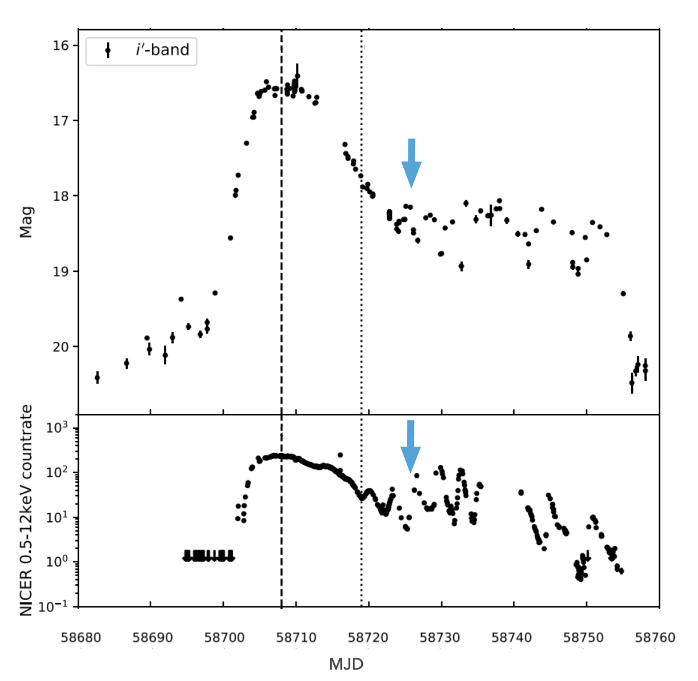
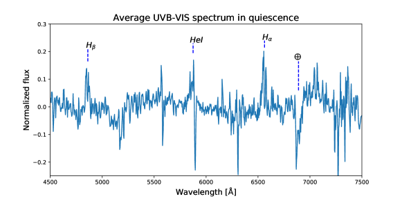
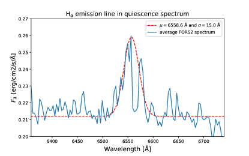
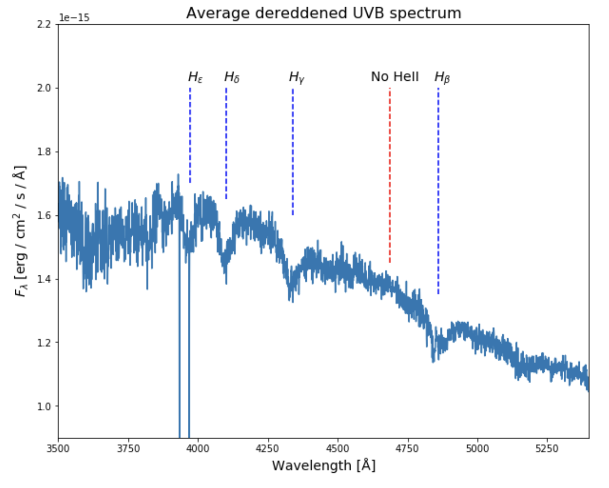
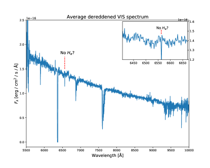
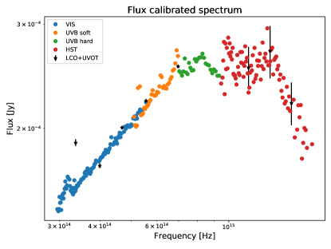
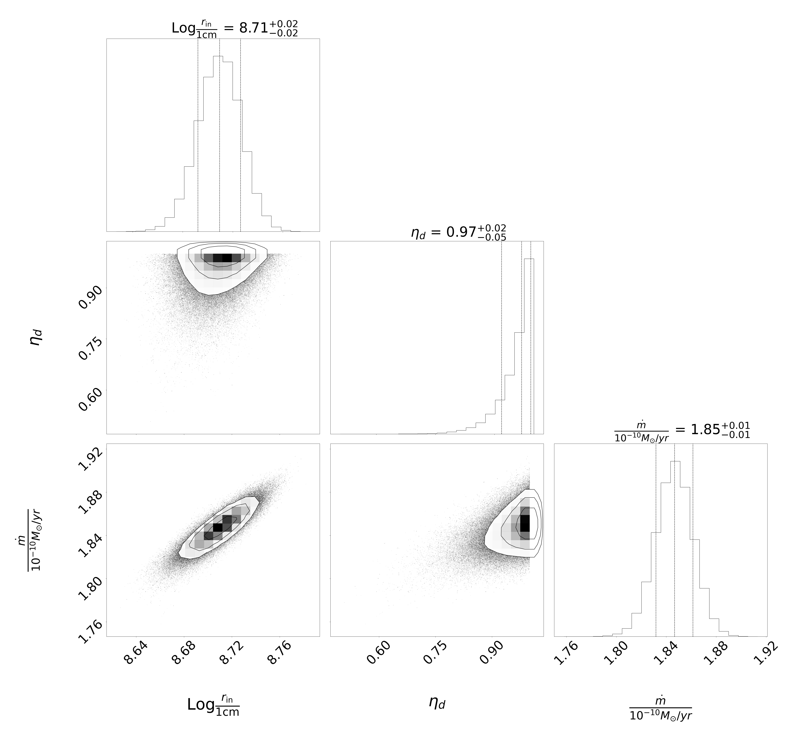
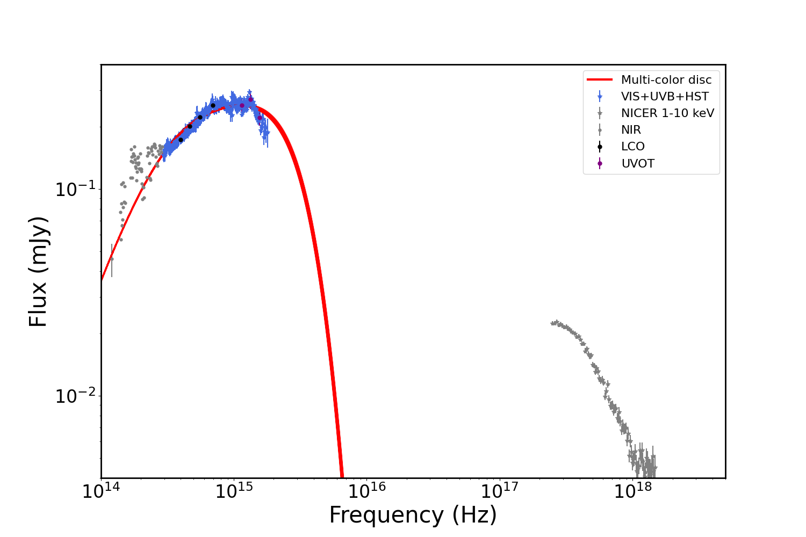

غياب خطوط الانبعاث في الأطياف البصرية لـ SAX J1808.4-3658 أثناء عودة اللمعان في انفجار 2019††thanks: ESO program ID: 2103.D-5054(A)
الملخص
Aims. نقدّم تحليلًا طيفيًا للثنائي السيني المتنامي والنبّاض الملي ثانية SAX J1808.4-3658. وتمثل هذه الأرصاد أول أرصاد تُحصل أثناء طور عودة اللمعان. جمعنا بيانات طيفية خلال بداية عودة اللمعان في انفجار 2019 وقارنّاها بمجموعات بيانات سابقة أُخذت في أزمنة مختلفة، سواء من الانفجار نفسه أو عبر السنوات. ولهذه الغاية، نقدّم أيضًا أطيافًا للمصدر أُخذت أثناء السكون في 2007، قبل عام واحد من الانفجار التالي.
Methods. استخدمنا بيانات أخذها مطياف X-shooter على التلسكوب الكبير جدًا (VLT) في 31 أغسطس 2019، بعد ثلاثة أسابيع من ذروة الانفجار. ولمعايرة التدفق، استخدمنا بيانات قياس ضوئي أُخذت في الليلة نفسها بواسطة تلسكوبات 1m التابعة لشبكة مرصد Las Cumbres الواقعة في تشيلي. نقارن أطيافنا ببيانات السكون التي أخذها مطياف VLT-FORS1 في سبتمبر 2007. فحصنا توزيع الطاقة الطيفية بملاءمة بياناتنا بنموذج قرص تنامٍ متعدد الألوان، وعيّنّا دالة كثافة الاحتمال البعدية لمعاملات النموذج بخوارزمية مونت كارلو بسلاسل ماركوف (MCMC).
Results. وجدنا أن الأطياف البصرية لانفجار 2019 عديمة السمات على نحو غير مألوف، إذ لا تظهر فيها خطوط انبعاث رغم الدقة العالية للأداة.
تؤدي ملاءمة توزيع الطاقة الطيفية في المجال فوق البنفسجي-البصري بنموذج قرص زائد نجم مُشعَّع إلى قيمة كبيرة جدًا لنصف قطر القرص الداخلي تبلغ  كم، ما قد يشير إلى أن القرص أُفرغ من المادة أثناء الانفجار، وربما يفسر الأطياف الخالية من الانبعاثات. وبدلًا من ذلك، قد يعود غياب خطوط الانبعاث إلى مساهمة كبيرة لانبعاث النفاثة عند الأطوال الموجية البصرية.
كم، ما قد يشير إلى أن القرص أُفرغ من المادة أثناء الانفجار، وربما يفسر الأطياف الخالية من الانبعاثات. وبدلًا من ذلك، قد يعود غياب خطوط الانبعاث إلى مساهمة كبيرة لانبعاث النفاثة عند الأطوال الموجية البصرية.
Key Words.:
الأشعة السينية: ثنائيات – التنامي، أقراص التنامي – النجوم: نيوترونية1 المقدمة
الثنائيات السينية منخفضة الكتلة (LMXBs) هي أنظمة ثنائية يتراكم فيها جسم مدمج، إما نجم نيوتروني (NS) أو ثقب أسود، مادةً من نجم مرافق منخفض الكتلة () عبر فيض فص روش، مكوّنةً قرص تنامٍ. وقد رُبطت الثنائيات السينية منخفضة الكتلة ذات النجوم النيوترونية بالنبّاضات الملي ثانية (MSP) عبر ما يُسمى سيناريو إعادة التدوير (e.g., Srinivasan, 2010)، الذي وفقًا له يُعاد تسريع نجم نيوتروني قديم في ثنائي ضيق بفعل تراكم المادة ليصل إلى الفترات الملي ثانية المرصودة. وجاء تأكيد هذه القناة التطورية مع اكتشاف SAX J1808.4-3658 (يشار إليه لاحقًا بـ SAX J1808)، الذي كُشف أولًا بواسطة BeppoSAX (in t’Zand et al., 1998) ثم رُصد باستخدام مستكشف توقيت الأشعة السينية Rossi (RXTE؛ Wijnands and van der Klis 1998). وهذا نظام LMXB رُصد وهو يُظهر نبضة مترابطة بتردد هرتز في انفجار سيني، مما يثبت أنه يحتوي على نجم نيوتروني سريع الدوران.
يقع المصدر على مسافة 2.5-3.5 كيلوفرسخ فلكي. ويدور النجم النيوتروني حول مرافق شبه متحلل كتلته  0.05–0.10 M⊙ (Bildsten and Chakrabarty, 2001; Wang et al., 2001; Deloye et al., 2008)، وتشير تأخيرات دوبلر في بيانات التوقيت المترابط إلى فترة مدارية قدرها 2.01 ساعة (Chakrabarty and Morgan, 1998). يُعد SAX J1808 نظامًا عابرًا؛ إذ يبقى في حالة سكون لمدة
0.05–0.10 M⊙ (Bildsten and Chakrabarty, 2001; Wang et al., 2001; Deloye et al., 2008)، وتشير تأخيرات دوبلر في بيانات التوقيت المترابط إلى فترة مدارية قدرها 2.01 ساعة (Chakrabarty and Morgan, 1998). يُعد SAX J1808 نظامًا عابرًا؛ إذ يبقى في حالة سكون لمدة  2-4 سنة ثم يدخل فجأة في انفجار، مع زيادة سريعة في لمعانه في الأشعة السينية (وفوق البنفسجية-البصرية) حتى إرغ ث-1 و قدرًا (in’t Zand et al., 2001; Roche et al., 1998).
2-4 سنة ثم يدخل فجأة في انفجار، مع زيادة سريعة في لمعانه في الأشعة السينية (وفوق البنفسجية-البصرية) حتى إرغ ث-1 و قدرًا (in’t Zand et al., 2001; Roche et al., 1998).
في حالة السكون، يمتلك هذا النظام لمعانًا سينيًا منخفضًا جدًا ( إرغ ث-1، Campana et al. 2002; Hartman et al. 2008) وقدرًا بصريًا خافتًا يبلغ قدرًا (Homer et al., 2001)، ويرتبط بالمتغير البصري-تحت الأحمر V4584 Sagittarii. ويُعتقد أن منحنى الضوء البصري الجيبي الشكل في السكون ينتجه النجم المرافق المُقفل مديًا والمُشعَّع (Homer et al., 2001; Deloye et al., 2008). ومع ذلك، فإن التدفق السيني المرصود غير كافٍ لتفسير الانبعاث البصري. ويمكن تفسير الفائض في الحزم البصرية باستدعاء تشعيع إضافي آتٍ من نبّاض راديوي نشط يعمل بالطاقة الدورانية (Campana et al., 2004; Burderi et al., 2003).
تُظهر الانفجارات المتكررة لهذا المصدر، مع عشرة أحداث مسجلة منذ اكتشافه، نمطًا يتمثل في زيادة لمعانه السيني بعامل  خلال فترة زمنية قصيرة (
خلال فترة زمنية قصيرة ( يومًا). وتسبق الزيادةَ في الانبعاث السيني (Goodwin et al., 2020) زيادةٌ في الانبعاث فوق البنفسجي-البصري-تحت الأحمر. وبعد ذروة الانفجار، يُظهر التدفق السيني اضمحلالًا بطيئًا يستمر شهرًا ثم عودة لمعان لاحقة لمدة
يومًا). وتسبق الزيادةَ في الانبعاث السيني (Goodwin et al., 2020) زيادةٌ في الانبعاث فوق البنفسجي-البصري-تحت الأحمر. وبعد ذروة الانفجار، يُظهر التدفق السيني اضمحلالًا بطيئًا يستمر شهرًا ثم عودة لمعان لاحقة لمدة  يومًا. ويُعتقد أن هذه المرحلة الأخيرة ترتبط بما يُسمى سيناريو الدافع (Patruno et al., 2016)، حيث يتأثر الانبعاث السيني بالعلاقة بين معدل التنامي ونصف القطر المغناطيسي. وبعد هذه المرحلة، يعود النظام إلى مستويات انبعاثه في السكون (مثلًا، Stella et al. 2000).
يومًا. ويُعتقد أن هذه المرحلة الأخيرة ترتبط بما يُسمى سيناريو الدافع (Patruno et al., 2016)، حيث يتأثر الانبعاث السيني بالعلاقة بين معدل التنامي ونصف القطر المغناطيسي. وبعد هذه المرحلة، يعود النظام إلى مستويات انبعاثه في السكون (مثلًا، Stella et al. 2000).
في 2019، وبعد أول ازدياد في السطوع البصري في 30 يوليو، تأكد أن SAX J1808 بدأ مرحلة انفجار جديدة في 6 أغسطس (MJD 58701). وبلغت الذروة البصرية لهذا الانفجار نحو 10 أغسطس (MJD 58705)، وبعد أربعة أيام (MJD 58709) بلغت الذروة في الأشعة السينية (Goodwin et al., 2020). وفي 24 أغسطس، حدّدت أرصاد الأشعة السينية بواسطة Bult et al. (2019) أن المصدر دخل حالة عودة اللمعان، التي رُصدت بعد ذلك بصريًا بواسطة Baglio et al. (2019). وأبلغ المؤلفون عن أربعة أحداث توهج متميزة في التواريخ الآتية: 30 أغسطس، و2 سبتمبر، و4 سبتمبر، و12 سبتمبر.
في هذه الورقة، نقدّم تحليلًا طيفيًا لطور عودة اللمعان البصري في SAX J1808، وكذلك طيف السكون المأخوذ في 2007، قبل عام واحد من انفجار 2008. في القسم 2، نصف الأرصاد المنفذة باستخدام VLT X-shooter وVLT-FORS1، بينما نصف في القسم 3 الخصائص الطيفية لمجموعتي الأطياف. في القسم 4، نمضي إلى وصف توزيع الطاقة الطيفية (SED). وفي القسم 5، نناقش نتائجنا، ونستخلص استنتاجاتنا في القسم 6.
2 الأرصاد واختزال البيانات
لإجراء تحليلنا، استخدمنا بيانات من أدوات متعددة على تلسكوبات مختلفة وتغطي حزمًا موجية متعددة. ويرد ملخص لمجموعات البيانات المستخدمة في هذه الورقة في الجدول 1.
2.1 سكون 2007
أجرينا رصدًا طيفيًا لـ SAX J1808 أثناء حالة السكون في سبتمبر 2007، من MJD 54345.9915 إلى 54346.1839، أي قبل عام واحد من انفجار 2008. وكانت هذه 22 طيفًا بزمن تعريض 500 ث لكل منها، أُخذت بأداة VLT-FORS1 وبعرض شق ومحزوز 300V (R 1650).
1650).
2.2 انفجار 2019
بدأت مراقبتنا لـ SAX J1808 بعد ثلاثة أسابيع من بلوغ الذروة في المجال البصري، وبعد أسبوع من بداية عودة اللمعان السيني، وبعد يوم واحد من أول نوبة عودة لمعان بصرية (الشكل 1). وهذه هي المرة الأولى التي يُجرى فيها تحليل طيفي بصري خلال هذه المرحلة. نُفذت الأرصاد بواسطة مطياف X-shooter (Vernet et al., 2011) على VLT في 31 أغسطس 2019 (MJD 58726.0093) من 00:13 إلى 02:41 UTC (MJD 58726.11205)، وهي تغطي أكثر من فترة مدارية واحدة للثنائي. وتمتلك الأداة ثلاثة أذرع مختلفة يمكنها الرصد في نطاقات فوق البنفسجي (UV، R 5400)، والبصري (VIS، R
5400)، والبصري (VIS، R 8900)، وتحت الأحمر القريب (NIR؛ R
8900)، وتحت الأحمر القريب (NIR؛ R 5600)، بحيث تغطي بين 300 و2480 نانومتر. استخدمنا عرض شق لذراعي UV وVIS، وعرض شق لـ NIR. حصلنا على 19 طيفًا في نمط STARE لكل ذراع، بزمن تعريض 300 ثانية لكل منها. واختزلنا الأطياف باستخدام خط أنابيب X-Shooter (Modigliani et al., 2010)، باتباع الإجراءات المعتادة لتصحيح الانحياز والمجال المسطح. وجمعنا أيضًا أطيافًا فوق بنفسجية في 28 أغسطس 2019 (MJD 58723.9076) باستخدام مطياف التصوير بالتلسكوب الفضائي (STIS)، العامل في حزمة UV ذات 165-310 نانومتر، على متن تلسكوب Hubble الفضائي (HST؛ STIS، GO/DD-15987، PI Miraval Zanon، Ambrosino et al. 2021). وكما يصف المؤلفون، أجروا أرصادًا في نمط TIME-TAG باستبانة زمنية 125
5600)، بحيث تغطي بين 300 و2480 نانومتر. استخدمنا عرض شق لذراعي UV وVIS، وعرض شق لـ NIR. حصلنا على 19 طيفًا في نمط STARE لكل ذراع، بزمن تعريض 300 ثانية لكل منها. واختزلنا الأطياف باستخدام خط أنابيب X-Shooter (Modigliani et al., 2010)، باتباع الإجراءات المعتادة لتصحيح الانحياز والمجال المسطح. وجمعنا أيضًا أطيافًا فوق بنفسجية في 28 أغسطس 2019 (MJD 58723.9076) باستخدام مطياف التصوير بالتلسكوب الفضائي (STIS)، العامل في حزمة UV ذات 165-310 نانومتر، على متن تلسكوب Hubble الفضائي (HST؛ STIS، GO/DD-15987، PI Miraval Zanon، Ambrosino et al. 2021). وكما يصف المؤلفون، أجروا أرصادًا في نمط TIME-TAG باستبانة زمنية 125  s لمدة تقارب 2.2 ks باستخدام كاشف NUV-MAMA. واستخدموا محزوز G230L وجهزوه بشق قدره ثانية قوسية، وبذلك ضمنوا استبانة طيفية قدرها على المجال الاسمي (500-1010). وقدّروا إشارة الخلفية باختيار الفوتونات خارج منطقة المصدر في قنوات شق الأداة ومتوسطتها، مع تطبيع النتيجة على العدد الكلي للقنوات.
حُللت جميع البيانات الطيفية باستخدام حزمة MOLLY11
1
http://deneb.astro.warwick.ac.uk/phsaap/software/.
s لمدة تقارب 2.2 ks باستخدام كاشف NUV-MAMA. واستخدموا محزوز G230L وجهزوه بشق قدره ثانية قوسية، وبذلك ضمنوا استبانة طيفية قدرها على المجال الاسمي (500-1010). وقدّروا إشارة الخلفية باختيار الفوتونات خارج منطقة المصدر في قنوات شق الأداة ومتوسطتها، مع تطبيع النتيجة على العدد الكلي للقنوات.
حُللت جميع البيانات الطيفية باستخدام حزمة MOLLY11
1
http://deneb.astro.warwick.ac.uk/phsaap/software/.

في التاريخ نفسه الذي أُخذت فيه أطياف X-Shooter، اكتُسب تصوير بصري باستخدام تلسكوبات 1m التابعة لشبكة مرصد Las Cumbres والواقعة في Cerro Tololo (تشيلي) في الحزم z وi’ وV وR وB، بأزمنة تعريض 200s في z و100s في جميع المرشحات المتبقية. أُخذت جميع الأرصاد بين MJD 58726.1509 وMJD 58726.1602. عولجت البيانات عبر خط أنابيب نظام الإنذار المبكر الجديد للثنائيات السينية (XB-NEWS) (Russell et al., 2019) المطور حديثًا، الذي ينفذ قياسًا ضوئيًا متعدد الفتحات (MAP)، ويحل معايرات نقطة الصفر بين الأزمنة (Bramich and Freudling, 2012)، ويعاير تدفق القياس الضوئي باستخدام فهرس ATLAS-REFCAT2 (الذي يتضمن Pan-STARRS DR1،22 2 https://panstarrs.stsci.edu وAPASS،33 3 https://www.aavso.org/apass وفهارس أخرى؛ Tonry et al. 2012). وعلى خلاف الحزم B وV وi’ وz، تُعاير الحزمة R بطريقة غير مباشرة عبر المقارنة مع الأقدار القياسية المتوقعة لحزمة R. وتُحسب الأقدار القياسية المتوقعة لحزمة R لنجوم ATLAS-REFCAT2 ذات الأقدار القياسية و في Pan-STARRS1 باستخدام التحويلات المقدمة في Tonry et al. (2012). ثم ينتج خط الأنابيب منحنى ضوء معايرًا للهدف بقياسات شبه آنية (لمزيد من التفاصيل، انظر Russell et al. 2019). ونلاحظ وجود رصد شبه متزامن في مرشح u’ (الطول الموجي المركزي: ) أيضًا. ومع ذلك، نستبعده من هذا التحليل بسبب غياب نجوم قياسية في حزمة u’ ضمن الحقل.
إضافة إلى البيانات البصرية، استرجعنا بيانات قياس ضوئي فوق بنفسجية من أرشيف Swift-UVOT (مرشحات و و). وقد حُصل على أقرب البيانات إلى مجموعتنا في MJD 58725.0738 (2019-08-30 01:46:14 UTC)، بزمن تعريض 518.89 ث. ونلاحظ أنه وفقًا للقياس الضوئي البصري LCO في حزمة B، لا تُرصد إلا تغيرات طفيفة ( قدر) في التدفقات بين 29 أغسطس و2 سبتمبر، مما يبرر استخدام بيانات UVOT في دراستنا. ولاستخراج الأقدار، استخدمنا روتين HEASOFT uvotsource،
مع تعريف فتحة دائرية متمركزة على
المصدر بنصف قطر كمنطقة استخراج، وفتحة دائرية
(بعيدًا عن المصدر) بنصف قطر كخلفية. وقد استُخدم هذا النصف الصغير نسبيًا لتجنب المصادر المجاورة.
وبعد التصحيح للاحمرار (باستخدام  قدر كما ورد في Baglio et al. 2020 وGoodwin et al. 2020 وباستخدام علاقات Cardelli et al. 1989)، اشتققنا كثافات التدفق للترددات الوحدية في جميع الحزم.
قدر كما ورد في Baglio et al. 2020 وGoodwin et al. 2020 وباستخدام علاقات Cardelli et al. 1989)، اشتققنا كثافات التدفق للترددات الوحدية في جميع الحزم.
لحساب لمعان الطاقة العالية  الذي يشعّع النجم المرافق، نظرنا في الأرصاد التي جُمعت في 31 أغسطس 2019 (MJD 58726.2718، بتعريض 1542.0 ث) بواسطة مستكشف البنية الداخلية للنجوم النيوترونية (NICER; Gendreau et al., 2016). هذه المجموعة هي الأقرب إلى أرصاد X-shooter الخاصة بنا، وتُعرف في قاعدة بيانات أرشيف NICER بالمعرّف ObsID 2584011501.
حللناها باستخدام برنامج HEASOFT الإصدار 6.32.1 وإصدار NICERDAS 11a. وكان إصدار CALDB (بيانات المعايرة الأرشيفية) المستخدم هو 20221001. طبقنا معايير الترشيح والتنظيف القياسية. وأدرجنا البيانات عندما كانت زاوية حافة الأرض المظلمة ، وانزياح التوجيه ، وزاوية حافة الأرض المضيئة ، ومحطة الفضاء الدولية (ISS) خارج شذوذ جنوب الأطلسي. أزلنا البيانات من الكاشفين
الذي يشعّع النجم المرافق، نظرنا في الأرصاد التي جُمعت في 31 أغسطس 2019 (MJD 58726.2718، بتعريض 1542.0 ث) بواسطة مستكشف البنية الداخلية للنجوم النيوترونية (NICER; Gendreau et al., 2016). هذه المجموعة هي الأقرب إلى أرصاد X-shooter الخاصة بنا، وتُعرف في قاعدة بيانات أرشيف NICER بالمعرّف ObsID 2584011501.
حللناها باستخدام برنامج HEASOFT الإصدار 6.32.1 وإصدار NICERDAS 11a. وكان إصدار CALDB (بيانات المعايرة الأرشيفية) المستخدم هو 20221001. طبقنا معايير الترشيح والتنظيف القياسية. وأدرجنا البيانات عندما كانت زاوية حافة الأرض المظلمة ، وانزياح التوجيه ، وزاوية حافة الأرض المضيئة ، ومحطة الفضاء الدولية (ISS) خارج شذوذ جنوب الأطلسي. أزلنا البيانات من الكاشفين  و لأنهما يُظهران نوبات من الضجيج الإلكتروني المتزايد. واستخرجنا طيف طاقة مطروحًا منه الخلفية باستخدام نموذج nibackgen3c50 (Remillard et al., 2022). ولاءمنا أطياف الطاقة لـ SAX J1808 باستخدام XSPEC (V. 12.10.1; Arnaud, 1996). اقتصرنا على حزمة الطاقة وأدرجنا خط امتصاص غاوسيًا عند 0.76 keV لنمذجة البقايا الأداتية دون keV، وهي بقايا نموذجية لبعثات الأشعة السينية والكواشف المعتمدة على Si (e.g., Ludlam et al., 2018; Miller et al., 2018). ثم أعدنا تجميع الأطياف بحيث تحتوي كل خانة على 25 عدة على الأقل. ولاءمنا الطيف بمزيج من نموذج قانون قدرة ممتص وجسم أسود. ونتيجة للملاءمة، نحصل على كثافة عمودية قدرها ، ودليل قانون قدرة قدره 2.02
و لأنهما يُظهران نوبات من الضجيج الإلكتروني المتزايد. واستخرجنا طيف طاقة مطروحًا منه الخلفية باستخدام نموذج nibackgen3c50 (Remillard et al., 2022). ولاءمنا أطياف الطاقة لـ SAX J1808 باستخدام XSPEC (V. 12.10.1; Arnaud, 1996). اقتصرنا على حزمة الطاقة وأدرجنا خط امتصاص غاوسيًا عند 0.76 keV لنمذجة البقايا الأداتية دون keV، وهي بقايا نموذجية لبعثات الأشعة السينية والكواشف المعتمدة على Si (e.g., Ludlam et al., 2018; Miller et al., 2018). ثم أعدنا تجميع الأطياف بحيث تحتوي كل خانة على 25 عدة على الأقل. ولاءمنا الطيف بمزيج من نموذج قانون قدرة ممتص وجسم أسود. ونتيجة للملاءمة، نحصل على كثافة عمودية قدرها ، ودليل قانون قدرة قدره 2.02  0.03، ودرجة حرارة جسم أسود قدرها ونصف قطره
0.03، ودرجة حرارة جسم أسود قدرها ونصف قطره  كم (مع افتراض مسافة 2.5 كيلوفرسخ فلكي)، وهو ما يتسق مع أصل في النجم النيوتروني. وتُعد الملاءمة مقبولة مع و درجة حرية. أما اللمعان السيني غير الممتص المستقرأ من نطاق فهو .
كم (مع افتراض مسافة 2.5 كيلوفرسخ فلكي)، وهو ما يتسق مع أصل في النجم النيوتروني. وتُعد الملاءمة مقبولة مع و درجة حرية. أما اللمعان السيني غير الممتص المستقرأ من نطاق فهو .
| Instrument | Telescope | Type | Band | Start of observations [MJD] | Exposure time [s] |
|---|---|---|---|---|---|
| X-shooter | VLT | Spectroscopic | NIR, VIS, UVB | 58726.0093 | 19 300 |
| STIS | HST | Spectroscopic | UV | 58723.9076 | 2200/125s |
| fa15 | 1m0-05 | Photometric | 58726.1509 | 200 (), 100 | |
| UVOT | Swift | Photometric | UV | 58725.0738 | 518.89 |
| XTI | NICER | Spectroscopic | X-ray | 58726.2718 | 1542.0 |
| FORS1 | VLT | Spectroscopic | NIR-UVB | 54345.9915 | 22 500 |
3 الخصائص الطيفية
3.1 سكون 2007
أظهر كل طيف من الأطياف المكتسبة سمات انبعاث بارزة من Hα وHβ, وHeI عند 5875Å (الشكل 2)، ملاصقة لخط امتصاص NaD بين النجوم.

تبدو خطوط الانبعاث متسعة وتُظهر هيئة مزدوجة القمتين، مما يدل على أن أصلها في قرص تنامٍ. ولتقييم عرض أجنحة الخطوط على نحو أفضل (وهي وكيل لأسرع جزء داخلي من القرص)، لائمنا كل هذه الخطوط بمكوّن غاوسي واحد، مع إهمال النقاط في اللب. وتعرض خطوط الانبعاث عرضًا كاملًا عند نصف القيمة العظمى يقارب  35
35 5.4Å، وهو ما يقابل سرعات تبلغ تقريبًا 1600
5.4Å، وهو ما يقابل سرعات تبلغ تقريبًا 1600 247 كم ث-1، بما يتسق مع سرعات القرص الداخلي. وعند هذه الأطوال الموجية ومع إعدادنا، يستطيع FORS1 حل سرعات حتى 700 كم ث-1، ما يجعل بياناتنا أعلى بوضوح من قدرة الفصل في الأداة. في الشكل 3، نعرض انبعاث Hα، وهو الخط ذو أعلى نسبة إشارة إلى ضجيج.
247 كم ث-1، بما يتسق مع سرعات القرص الداخلي. وعند هذه الأطوال الموجية ومع إعدادنا، يستطيع FORS1 حل سرعات حتى 700 كم ث-1، ما يجعل بياناتنا أعلى بوضوح من قدرة الفصل في الأداة. في الشكل 3، نعرض انبعاث Hα، وهو الخط ذو أعلى نسبة إشارة إلى ضجيج.

3.2 انفجار 2019
في الشكل 4، نرسم الطيف المتوسط لـ SAX J1808 في ذراع UVB لأداة X-shooter. صححنا للاحمرار المجرّي باتباع Schlafly and Finkbeiner (2011) ضمن MOLLY مع قدر. يهيمن على طيف UVB خطوط بالمر عريضة في الامتصاص، مع انعكاس انبعاث مركزي في خط Hβ واستمرار وجود امتصاص NaD بين النجوم. ولم نكشف أي خطوط انبعاث من HeII عند  4686Å، ولا من HeI عند
4686Å، ولا من HeI عند  5875Å، ولا من معقد Bowen عند
5875Å، ولا من معقد Bowen عند  4630–4660Å. ومن المدهش أن خط Hα كان غائبًا أيضًا عن الأطياف المرئية (الشكل 5)، باستثناء ما يمكن ربما تفسيره بأنه خط امتصاص رفيع على نحو غريب.
4630–4660Å. ومن المدهش أن خط Hα كان غائبًا أيضًا عن الأطياف المرئية (الشكل 5)، باستثناء ما يمكن ربما تفسيره بأنه خط امتصاص رفيع على نحو غريب.

 4630-4660Å).
4630-4660Å).
 6563Å.
6563Å.4 ملاءمة توزيع الطاقة الطيفية
أجرينا ملاءمة لتوزيع الطاقة الطيفية فوق البنفسجي-البصري (SED)، مما أتاح لنا توصيفًا أفضل للطيف عريض الحزمة الكلي للمصدر المحصل عليه عند أطوال موجية متعددة ضمن النافذة الزمنية نفسها. ومن خلال تحليل SED على مراتب عدة من حيث التردد، تمكنا من تحديد العمليات الفيزيائية المختلفة التي تنشأ عنها الانبعاثات المرصودة، وبذلك أتيحت لنا فرصة فصل مساهمة المكونات المختلفة للنظام (أي النجم النيوتروني، والقرص، والمرافق، والبقعة الساخنة، وما إلى ذلك).
نظرًا إلى أن أطياف UVB-VIS لم تُؤخذ عند الزاوية الباراكتية بسبب ازدحام حقل SAX J1808 على نحو خاص، فقد تأثرت أطيافنا بأثر احمرار إضافي يصبح مهمًا عند الأطوال الموجية الزرقاء. ولإجراء معايرة التدفق، قرّبنا منحنى SED بوصفه تراكبًا لقوانين قدرة، مع استقراء ميولها ومقاطعها من قياسات LCO الضوئية عند نقاط i’ وR وV وB (في المخطط اللوغاريتمي-اللوغاريتمي). قسّمنا بياناتنا إلى مقاطع باستخدام تردد نقاط بيانات LCO لتحديد أطرافها، وحسبنا ملاءمة قانون قدرة لكل مقطع. وبتثبيت مسافة كل نقطة عن ملاءمة قانون القدرة الناتجة، ثبتنا التشتت الداخلي للبيانات وأعدنا إنتاجه على مجموعة قوانين القدرة التي تمليها القياسات الضوئية، وبذلك حصلنا على المخطط (الشكل 6). أما بالنسبة إلى بيانات HST، فقد أعدنا ببساطة تحجيم البيانات بعامل 1.25 لتطابق بيانات UVOT الضوئية.
لإجراء ملاءمة SED، استخدمنا نموذج قرص تنامٍ متعدد الألوان لوصف تدفقات البصري - فوق البنفسجي (اتباعًا لـ Baglio et al. 2023). وفي نموذج قرص التنامي متعدد الألوان (المعادلات 10–15 في Chakrabarty 1998)، سمحنا لنصف القطر الداخلي لقرص التنامي ()، وبياض القرص للأشعة السينية (المتوقع أن يكون Chakrabarty 1998)، ومعدل انتقال الكتلة من المرافق بالتغير (المتوقع أن يكون ، كما يُتنبأ لنظام ثنائي سيني بفترة مدارية ساعة يستضيف نجمًا وينقل الكتلة عبر فقدان الزخم الزاوي؛ Verbunt 1993).
وثُبتت المسافة إلى SAX J1808 ( )، والفصل الثنائي (
)، والفصل الثنائي ( )، ولمعان التشعيع (
)، ولمعان التشعيع ( ) عند قيم معروفة (أو معقولة): pc (Cornelisse et al., 2001) و، حيث هي كتلة النجم النيوتروني، و هي كتلة النجم المرافق، و hr هي الفترة المدارية للثنائي، و هو ثابت الجاذبية.
ثُبت عند ، وهي قيمة حُسبت من رصد NICER المأخوذ في 31 أغسطس 2019.
) عند قيم معروفة (أو معقولة): pc (Cornelisse et al., 2001) و، حيث هي كتلة النجم النيوتروني، و هي كتلة النجم المرافق، و hr هي الفترة المدارية للثنائي، و هو ثابت الجاذبية.
ثُبت عند ، وهي قيمة حُسبت من رصد NICER المأخوذ في 31 أغسطس 2019.
لم نُدرج نقاط طيف X-shooter VIS الواقعة دون تردد حزمة i’ في الملاءمة، إذ بيّن Baglio et al. (2020) أن مساهمة غير مهملة من نفاثة مدمجة قد تكون متوقعة عند ترددات دون حزمة i’. ولأسباب مماثلة، استبعدنا طيف NIR بأكمله.

أجرينا أخذ عينات مونت كارلو بسلاسل ماركوف (MCMC) لدالة كثافة الاحتمال البعدية في فضاء معاملات النموذج (الجدول 2).
لدينا ثلاثة معاملات حرة في الملاءمة، هي نصف قطر القرص الداخلي  ، وبياض النجم المرافق ، ومعدل التنامي . وبالنسبة إلى نصف القطر، استخدمنا توزيعًا قبليًا منتظمًا في المجال المعقول ، حيث (Powell et al., 2007). وبالنسبة إلى البياض، استخدمنا المجال ،
وكان مجال معدل التنامي ؛ وقد أتاح ذلك للمتغيرات الثلاثة كلها مجالًا واسعًا من فضاء المعاملات. وهذا مهم جدًا لتقليل احتمال أن تقع معاملات المصدر الفعلية خارج المنطقة التي أخذ منها التوزيع القبلي المختار عينات. وكما يبيّن مخطط الزوايا في الشكل 7، فإن المعاملات الثلاثة كلها مقيدة جيدًا بالملاءمة. وقد قُدّر كل منها بوصفه وسيط التوزيع البعدي الهامشي، مع مجالات مصداقية
، وبياض النجم المرافق ، ومعدل التنامي . وبالنسبة إلى نصف القطر، استخدمنا توزيعًا قبليًا منتظمًا في المجال المعقول ، حيث (Powell et al., 2007). وبالنسبة إلى البياض، استخدمنا المجال ،
وكان مجال معدل التنامي ؛ وقد أتاح ذلك للمتغيرات الثلاثة كلها مجالًا واسعًا من فضاء المعاملات. وهذا مهم جدًا لتقليل احتمال أن تقع معاملات المصدر الفعلية خارج المنطقة التي أخذ منها التوزيع القبلي المختار عينات. وكما يبيّن مخطط الزوايا في الشكل 7، فإن المعاملات الثلاثة كلها مقيدة جيدًا بالملاءمة. وقد قُدّر كل منها بوصفه وسيط التوزيع البعدي الهامشي، مع مجالات مصداقية  آتية من الرتبتين المئويتين 16 و-84 للتوزيع البعدي. والنتائج هي ، وهو ما يعادل نصف قطر قرص داخلي قدره سم. وينتج البياض ، بينما يتقارب معدل التنامي عند . وكلتا القيمتين متوافقتان مع التوقعات. وتظهر ملاءمة البيانات في الشكل 8.
آتية من الرتبتين المئويتين 16 و-84 للتوزيع البعدي. والنتائج هي ، وهو ما يعادل نصف قطر قرص داخلي قدره سم. وينتج البياض ، بينما يتقارب معدل التنامي عند . وكلتا القيمتين متوافقتان مع التوقعات. وتظهر ملاءمة البيانات في الشكل 8.
| Parameter | Posterior | Prior |
|---|---|---|

 (يمينًا). وتعرض اللوحات العليا للأعمدة الثلاثة كلها التوزيع البعدي الهامشي المستخدم لتقدير المعاملات الحرة.
(يمينًا). وتعرض اللوحات العليا للأعمدة الثلاثة كلها التوزيع البعدي الهامشي المستخدم لتقدير المعاملات الحرة.
5 المناقشة
اكتُسبت الأطياف التي حللناها في المراحل الأولى من عودة اللمعان البصري، بعد ثلاثة أسابيع من الذروة البصرية للانفجار الرئيسي. وهي تُظهر غيابًا لافتًا لخطوط الانبعاث، مع إظهارها في الوقت نفسه خطوط امتصاص عريضة وعميقة جدًا من سلسلة بالمر، مما يوحي بأصل من القرص سريع الدوران. وتكشف الأرصاد السابقة بواسطة Elebert et al. (2009) وCornelisse et al. (2009) بوضوح خط HeII النموذجي ومزيج Bowen أثناء ذروة انفجار 2008، الذي أظهر مع ذلك خصائص امتصاص مشابهة لتلك التي وجدناها. أما طيف الزمن المبكر ( 4 يومًا قبل الذروة البصرية) بواسطة Goodwin et al. (2020) لانفجار 2019، فيبرز أن خط الانبعاث الوحيد المكتشف في هذه الحقبة، HeII، كان ضعيفًا على نحو استثنائي.
4 يومًا قبل الذروة البصرية) بواسطة Goodwin et al. (2020) لانفجار 2019، فيبرز أن خط الانبعاث الوحيد المكتشف في هذه الحقبة، HeII، كان ضعيفًا على نحو استثنائي.
وبصرف النظر عن غياب الهيليوم، فإن الغياب الكامل لـ Hα في طيف مرحلة عودة اللمعان لدينا ربما يكون أكثر إرباكًا. وعلى الرغم من أن Hα الضعيف (سواء في الامتصاص أو الانبعاث) فُسّر في الأدبيات (وكذلك في Goodwin et al. 2020) بوصفه نتيجة للميل المنخفض للنظام، فإن هذا التفسير الهندسي يتعارض مع كشف خط Hα أثناء السكون، لأن الثنائي لا يغير زاوية رؤيته. وقد يُجادل بأن أصل هذا الخط المحدد ليس في القرص، بل في موقع آخر (مثلًا، الصدمة الناتجة عن ريح النبّاض النسبية - إن كانت نشطة - أو النجم المرافق)؛ غير أن ذلك سيتعارض مع حقيقة أن الخط عريض بوضوح (انظر الشكل 3، الذي يُظهر تشتتًا عاليًا رغم الدقة المنخفضة للأداة). نقترح تفسيرين محتملين لغياب خط Hα في أطياف مرحلة عودة اللمعان لدينا.
5.1 قرص مُفرغ
الفرضية الأولى لتفسير نقص خطوط الانبعاث هي أن المنطقة الداخلية من القرص التي تنتج عادة الانبعاث عند الأطوال الموجية البصرية قد تكون مستنزفة من المادة لأن القرص ينتهي إلى حالة مُفرغة في نهاية الانفجار الرئيسي. ويعزز هذا التفسيرَ ملاءمة MCMC المنفذة على أطياف X-shooter-HST، التي تقاربت إلى نصف قطر قرص داخلي قدره كم، راسمةً صورة لقرص شديد الترقق. ومع ذلك، نلاحظ أن هذه النتيجة قد تكون متحيزة بفعل أن نموذجنا يلائم فقط جزء قرص التنامي الذي يكون فيه المجال البصري-فوق البنفسجي ذا صلة. ومع ذلك، فإن المنطقة التي يقع فيها نصف قطر القرص الداخلي عادة ستشع أساسًا في فوق البنفسجي البعيد. ولسوء الحظ، لا تمتد مجموعة بياناتنا إلى هذا الحد في الطيف. كما يُظهر الشكل 8 أن الملاءمة تفشل في وصف الانبعاث عند ترددات أعلى من (أي مرشح UVOT )، حيث يُظهر الطيف قطعًا. وقد يشير ذلك إلى قطعة مفقودة في الصورة. ويمكن تفسير القطع الظاهر لأعلى الترددات في بيانات HST لدينا بقرص داخلي مُشعَّع، سيكون وصفه أفضل بدرجة حرارة جسم أسود مختلفة عن درجة حرارة القرص البصري؛ غير أن نقص البيانات في نطاق ترددات فوق البنفسجي البعيد يجعل إثبات ذلك مستحيلًا.
5.2 مساهمة النفاثة
يعتمد التفسير الثاني على أن هذه البيانات اكتُسبت بعد يوم واحد فقط من الإبلاغ عن أول حدث عودة لمعان بصري، وقبل يومين من الحدث التالي، وبعد أسبوع من بداية عودة اللمعان السيني (Bult et al., 2019; Baglio et al., 2019). وقد تكون القيمة الكبيرة لنصف قطر القرص الداخلي متسقة مع أثر الدافع، الذي ينجم بدؤه عن تناقص التنامي وطرد الجزء الأعمق من القرص. وهذا بدوره قد يتسق مع القيمة الكبيرة لنصف قطر القرص الداخلي التي أعادتها محاكاة MCMC الخاصة بنا. وفي تحليلهم لانفجار 2019،
أخذ Baglio et al. (2020) أيضًا في الحسبان بيانات مكتسبة من أزمنة لاحقة من مرحلة عودة اللمعان. ووجدوا أنه في هذه المراحل (انظر الحقبتين 7 و8 في ورقتهم)، تكون مساهمة انبعاث النفاثة غير مهملة في حزم R وi’ وz. وبالفعل، نرى فائضًا واضحًا في نقطة معايرة LCO z في الشكل 6، وقد اخترنا إهماله كي لا نحيز ملاءمة MCMC، وربما يرجع ذلك إلى مساهمة كبيرة من النفاثة (غير المدرجة في دالة نموذجنا). وباتباع نموذج مساهمة النفاثة المبين في الشكل 11 من Baglio et al. (2020) واستنتاجاتهم (في وقت مجموعة بياناتنا)، فمن المرجح أننا نحقق شرط نفاثة “معتدلة”، تسهم بـ من التدفق في حزمتي R وi’ ثم تزداد مع الطول الموجي؛ لذلك ستكون سمات طرف طيفنا الأحمر محجوبة حتمًا بوجود النفاثة. وعلى وجه الخصوص، قد يُخفف خط انبعاث Hα بفعل المكوّن الأحمر الإضافي (لكن ليس  ، الموجود عند ترددات أعلى). ويدعم هذه الفرضية أيضًا أن تناقص بالمر Hα/Hβ (بعد إزالة الاحمرار) يكون عادة ثابتًا عند
، الموجود عند ترددات أعلى). ويدعم هذه الفرضية أيضًا أن تناقص بالمر Hα/Hβ (بعد إزالة الاحمرار) يكون عادة ثابتًا عند  (من نظرية إعادة التركيب للحالة B؛ مثلًا Osterbrock and Ferland 2006)؛ وحقيقة أننا نكشف بقوة في الامتصاص، بينما لا يوجد Hα، تشير إلى أن انبعاث القرص مُخفف بانبعاث النفاثة عند الطول الموجي لـ Hα. وهذا متسق مع معظم توزيعات الطاقة الطيفية في حالة عودة اللمعان المنشورة في Baglio et al. (2020)، وكذلك مع مخطط اللون-القدر لديهم، الذي يُظهر بوضوح المكوّن الأحمر الإضافي مقارنة بالجسم الأسود لقرص التنامي أيضًا خلال هذا الجزء من الانفجار.
(من نظرية إعادة التركيب للحالة B؛ مثلًا Osterbrock and Ferland 2006)؛ وحقيقة أننا نكشف بقوة في الامتصاص، بينما لا يوجد Hα، تشير إلى أن انبعاث القرص مُخفف بانبعاث النفاثة عند الطول الموجي لـ Hα. وهذا متسق مع معظم توزيعات الطاقة الطيفية في حالة عودة اللمعان المنشورة في Baglio et al. (2020)، وكذلك مع مخطط اللون-القدر لديهم، الذي يُظهر بوضوح المكوّن الأحمر الإضافي مقارنة بالجسم الأسود لقرص التنامي أيضًا خلال هذا الجزء من الانفجار.
6 الاستنتاجات
نقدم أول أطياف فوق بنفسجية-بصرية جُمعت أثناء بداية مرحلة عودة اللمعان البصري في انفجار 2019 للثنائي السيني العابر منخفض الكتلة SAX J1808.4-3658. حُصلت الأطياف في 31 أغسطس 2019، بعد 21 يومًا من ذروة الانفجار الرئيسي عند الأطوال الموجية البصرية، وهي تُظهر خطوط امتصاص متسعة تقابل سلسلة بالمر، مع غياب غريب لسمات خطوط الانبعاث. وقد وجدت أرصاد أبكر بواسطة Goodwin et al. (2020) قبل ذروة الانفجار غيابًا مشابهًا لخطوط الانبعاث (انبعاث HeII ضعيف، ولا وجود لمعقد Bowen، وامتصاص Hα عريض لكنه ضحل). وإلى جانب نقص الانبعاث، تُظهر المقارنة بين الحقبتين أن الخصائص الطيفية العامة لمرحلة عودة اللمعان البصري تبدو شديدة الشبه بتلك التي تُرصد أثناء الانفجار الرئيسي.
وفي حين يمكن تفسير ضعف خطوط الانبعاث قبل ذروة الانفجار بقرص لم يمتلئ بعد، فإن تفسير أطياف مرحلة عودة اللمعان لدينا قد يكون أكثر مراوغة. ونظرًا إلى وجود سمات خطوط الانبعاث هذه في السكون (مثلًا، أطياف 2007 المعروضة في هذا العمل)، فمن الصعب إرجاع غيابها إلى ميل منخفض للنظام، لذلك يبدو الأرجح أنه عائد إلى ظروف القرص في هذه الحقبة. وإحدى الإمكانات أن يكون القرص قد أُفرغ بسبب الانفجار نفسه. وتدعم هذه الفكرة معاملات القرص التي استرجعناها بملاءمة الأطياف البصرية-فوق البنفسجية-VIS المعايرة بخوارزمية MCMC؛ غير أن هذا الاستنتاج قد يكون متحيزًا بسبب نقص البيانات عند ترددات أعلى، حيث يقع القرص الداخلي عادة. وربما تقاربت الملاءمة إلى قيمة للقرص الداخلي قدرها  كم، وهي متسقة فعلًا مع قرص حار شديد الترقق. وإمكانية أخرى هي أن مساهمة النفاثة، التي ثبت وجودها وعدم إهمالها في مرحلة عودة اللمعان (Baglio et al., 2020)، تعمل فعليًا على تخفيف السمات الطيفية عند الأطوال الموجية في حزم z وi’ و. وإضافة إلى احتمال تفسير نقص الانبعاث، فإن القيمة الكبيرة لنصف قطر القرص الداخلي التي حصلنا عليها، مقترنة بحقيقة أن البيانات أُخذت أثناء مرحلة عودة اللمعان، قد تشير إلى آلية دافع قيد العمل، كما اقتُرح سابقًا لتفسير عودات اللمعان في هذا النظام (Patruno et al., 2016).
ولاستكشاف هذه السيناريوهات بصورة أعمق، سيكون من المفيد تطبيق استراتيجية رصد على انفجارات AMXP تكرر الظروف المواتية نفسها مثل هذه؛ أي أرصادًا مبكرة جدًا ومتأخرة جدًا، ربما مع مجموعة بيانات إضافية أثناء الذروة.
كم، وهي متسقة فعلًا مع قرص حار شديد الترقق. وإمكانية أخرى هي أن مساهمة النفاثة، التي ثبت وجودها وعدم إهمالها في مرحلة عودة اللمعان (Baglio et al., 2020)، تعمل فعليًا على تخفيف السمات الطيفية عند الأطوال الموجية في حزم z وi’ و. وإضافة إلى احتمال تفسير نقص الانبعاث، فإن القيمة الكبيرة لنصف قطر القرص الداخلي التي حصلنا عليها، مقترنة بحقيقة أن البيانات أُخذت أثناء مرحلة عودة اللمعان، قد تشير إلى آلية دافع قيد العمل، كما اقتُرح سابقًا لتفسير عودات اللمعان في هذا النظام (Patruno et al., 2016).
ولاستكشاف هذه السيناريوهات بصورة أعمق، سيكون من المفيد تطبيق استراتيجية رصد على انفجارات AMXP تكرر الظروف المواتية نفسها مثل هذه؛ أي أرصادًا مبكرة جدًا ومتأخرة جدًا، ربما مع مجموعة بيانات إضافية أثناء الذروة.
Acknowledgements.
تقر MCB بالدعم المقدم من زمالة INAF-Astrofit. تستند هذه المادة إلى عمل مدعوم من Tamkeen بموجب منحة CASS التابعة لـ NYU Abu Dhabi Research Institute.References
- Optical and ultraviolet pulsed emission from an accreting millisecond pulsar. NatAstr 5 (6), pp. 552–559. Cited by: §2.2.
- XSPEC: The First Ten Years. In XSPEC: The First Ten Years, G. H. Jacoby and J. Barnes (Eds.), Astronomical Data Analysis Software and Systems V, Vol. 101, pp. 17–20. External Links: ADS entry Cited by: §2.2.
- Matter ejections behind the highs and lows of the transitional millisecond pulsar PSR J1023+0038. A&A 677, pp. A30. External Links: Document, 2305.14509, ADS entry Cited by: §4.
- Probing Jet Launching in Neutron Star X-Ray Binaries: The Variable and Polarized Jet of SAX J1808.4-3658. ApJ 905 (2), pp. 87. External Links: Document, 2010.15176, ADS entry Cited by: Figure 1, §2.2, §4, §5.2, §6.
- Multiple reflares in SAX J1808.4- 3658 during the outburst decline according to optical observations. The Astronomer’s Telegram 13103, pp. 1. External Links: ADS entry Cited by: §1, §5.2.
- A brown dwarf companion for the accreting millisecond pulsar sax j1808. 4–3658. ApJ 557 (1), pp. 292. Cited by: §1.
- Systematic trends in sloan digital sky survey photometric data. Monthly Notices of the Royal Astronomical Society 424 (2), pp. 1584. Cited by: §2.2.
- NICER detects a high luminosity reflare from SAX J1808.4-3658. The Astronomer’s Telegram 13077, pp. 1. External Links: ADS entry Cited by: §1, §5.2.
- The optical counterpart to sax j1808. 4–3658 in quiescence: evidence of an active radio pulsar?. A&A 404 (3), pp. L43–L46. Cited by: §1.
- An xmm-newton study of the 401 hz accreting pulsar sax j1808. 4–3658 in quiescence. ApJ 575 (1), pp. L15. Cited by: §1.
- Indirect evidence of an active radio pulsar in the quiescent state of the transient millisecond pulsar sax j1808. 4–3658. ApJ 614 (1), pp. L49. Cited by: §1.
- The relationship between infrared, optical, and ultraviolet extinction. ApJ 345, pp. 245–256. External Links: ADS entry, Document Cited by: §2.2.
- High-Speed Optical Photometry of the Ultracompact X-Ray Binary 4U 1626-67. ApJ 492, pp. 342–351. External Links: astro-ph/9706049, Document, ADS entry Cited by: §4.
- The two-hour orbit of a binary millisecond x-ray pulsar. Nat 394 (6691), pp. 346–348. Cited by: §1.
- The first outburst of sax j1808. 4-3658 revisited. A&A 372 (3), pp. 916–921. Cited by: §4.
- Phase-resolved spectroscopy of the accreting millisecond x-ray pulsar sax j1808. 4-3658 during the 2008 outburst. A&A 495 (1), pp. L1–L4. Cited by: §5.
- Optical observations of sax j1808. 4- 3658 during quiescence. MNRAS 391 (4), pp. 1619–1628. Cited by: §1, §1.
- Optical spectroscopy and photometry of sax j1808. 4- 3658 in outburst. MNRAS 395 (2), pp. 884–894. Cited by: §5.
- The neutron star interior composition explorer (nicer): design and development. In Space telescopes and instrumentation 2016: Ultraviolet to gamma ray, Vol. 9905, pp. 420–435. Cited by: §2.2.
- Enhanced optical activity 12 d before x-ray activity, and a 4 d x-ray delay during outburst rise, in a low-mass x-ray binary. MNRAS 498 (3), pp. 3429–3439. Cited by: §1, §1, §2.2, §5, §5, §6.
- The long-term evolution of the spin, pulse shape, and orbit of the accretion-powered millisecond pulsar sax j1808. 4–3658. ApJ 675 (2), pp. 1468. Cited by: §1.
- The optical counterpart to sax j1808. 4- 3658: observations in quiescence. MNRAS 325 (4), pp. 1471–1476. Cited by: §1.
- Discovery of the x-ray transient sax j1808. 4-3658, a likely low mass x-ray binary. A&A. Cited by: §1.
- The first outburst of SAX J1808.4-3658 revisited. A&A 372, pp. 916–921. External Links: Document, astro-ph/0104285, ADS entry Cited by: §1.
- Detection of Reflection Features in the Neutron Star Low-mass X-Ray Binary Serpens X-1 with NICER. ApJ 858 (1), pp. L5. External Links: Document, 1804.10214, ADS entry Cited by: §2.2.
- A NICER Spectrum of MAXI J1535-571: Near-maximal Black Hole Spin and Potential Disk Warping. ApJ 860 (2), pp. L28. External Links: Document, 1806.04115, ADS entry Cited by: §2.2.
- The x-shooter pipeline. In Observatory operations: Strategies, processes, and systems iii, Vol. 7737, pp. 572–583. Cited by: §2.2.
- Astrophysics of gaseous nebulae and active galactic nuclei. External Links: ADS entry Cited by: §5.2.
- The reflares and outburst evolution in the accreting millisecond pulsar sax j1808. 4–3658: a disk truncated near co-rotation?. ApJ 817 (2), pp. 100. Cited by: §1, §6.
- Mass transfer during low-mass x-ray transient decays. MNRAS 374 (2), pp. 466. Cited by: §4.
- An Empirical Background Model for the NICER X-Ray Timing Instrument. ApJ 163 (3), pp. 130. External Links: Document, 2105.09901, ADS entry Cited by: §2.2.
- SAX j1808. 4-3658= xte j1808-369. IAUC 6885, pp. 1. Cited by: §1.
- Optical precursors to X‑ray binary outbursts. Astronomische Nachrichten 340 (4), pp. 278–283. External Links: Document, 1903.04519, ADS entry Cited by: §2.2.
- Measuring reddening with sloan digital sky survey stellar spectra and recalibrating sfd. ApJ 737 (2), pp. 103. Cited by: §3.2.
- Recycled pulsars. NewAR 54 (3), pp. 93. Cited by: §1.
- The discovery of quiescent x-ray emission from sax j1808. 4–3658, the transient 2.5 millisecond pulsar. ApJ 537 (2), pp. L115. Cited by: §1.
- The Pan-STARRS1 Photometric System. ApJ 750 (2), pp. 99. External Links: Document, 1203.0297, ADS entry Cited by: §2.2.
- Origin and evolution of X-ray binaries and binary radio pulsars. ARA&A 31, pp. 93–127. External Links: ADS entry, Document Cited by: §4.
- X-shooter, the new wide band intermediate resolution spectrograph at the eso very large telescope. A&A 536, pp. A105. Cited by: §2.2.
- The optical counterpart of the accreting millisecond pulsar sax j1808. 4–3658 in outburst: constraints on the binary inclination. ApJ 563 (1), pp. L61. Cited by: §1.
- A millisecond pulsar in an x-ray binary system. Nat 394, pp. 344. Cited by: §1.